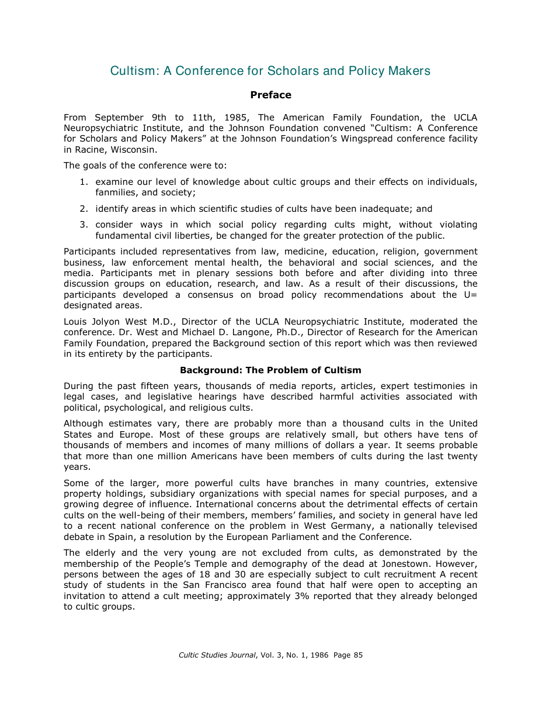
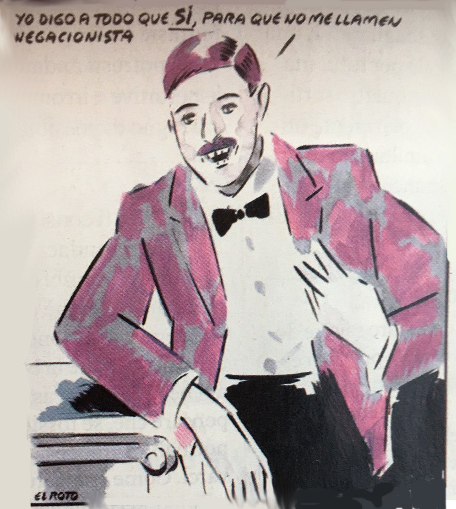
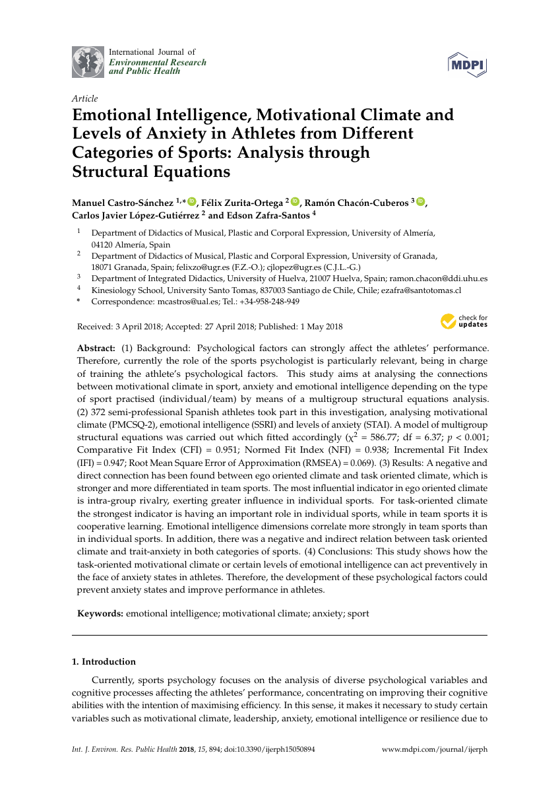
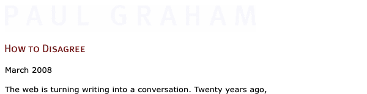
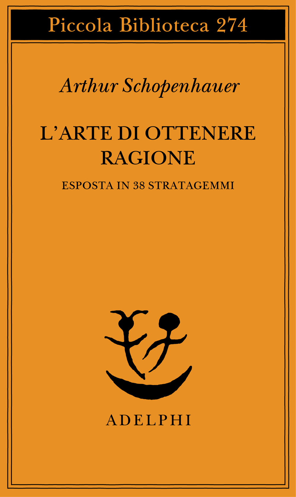
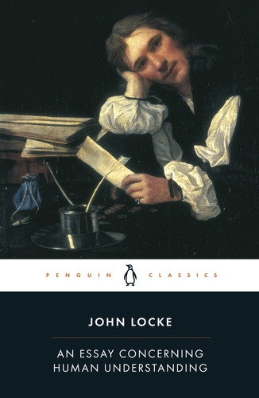
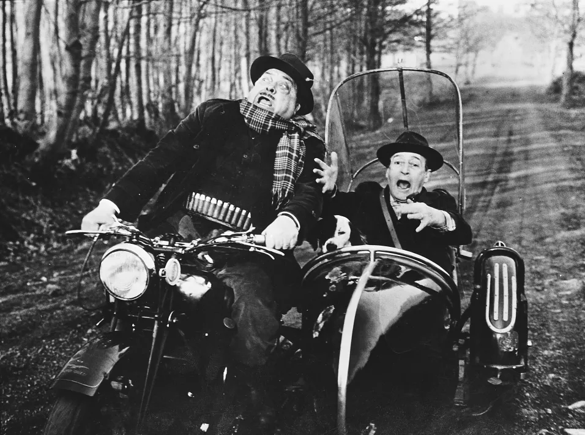
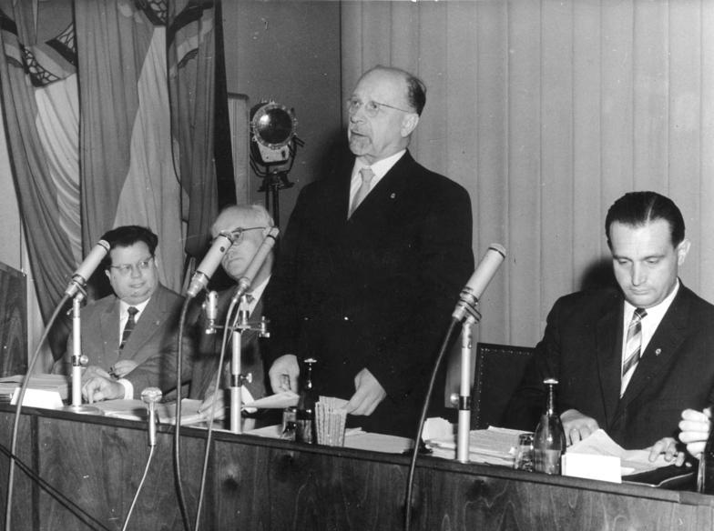

1:18:27 · 13 OPERE
Stiamo forse assistendo al sorgere di un culto transnazionale assistito?
Il filo del discorso
Il contributo propone di interpretare la comunicazione e l’adesione alle misure contro la pandemia attraverso il modello di un culto totalista. È la tesi polemica del relatore, non l’esito di un’indagine clinica sulle persone che condividono quelle misure. Una definizione della metà degli anni Ottanta introduce devozione, tecniche di persuasione, isolamento, controllo delle informazioni e dipendenza dal gruppo. Il relatore collega questi elementi ai mezzi elettronici contemporanei e alla delegittimazione del dissenso, richiamando casi storici di gruppi distruttivi senza dimostrare per questo un’identità fra fenomeni differenti. La prima opera discussa estesamente è Thought Reform and the Psychology of Totalism di Robert Jay Lifton. Il concetto di thought-terminating cliché diventa il filo conduttore del ragionamento: una formula breve può assumere il posto dell’analisi e rendere superfluo l’esame dei fatti. Il relatore applica questa categoria a esempi religiosi, all’uso dell’epiteto negazionista e a un articolo di Wu Ming. L’obiettivo dichiarato è difendere il dialogo, che dovrebbe permettere a ciascuno di riconoscere limiti ed errori dei propri ragionamenti. Il discorso passa poi dal linguaggio alle istituzioni. Sheldon Wolin e il totalitarismo inverso offrono al relatore un modello per criticare una democrazia che conserva le forme ma riduce la partecipazione e concentra il potere. Una frase attribuita a Tommy Douglas e il racconto personale di un acquisto in farmacia accompagnano la sua opposizione alla mercificazione della salute. Il prezzo riferito nell’aneddoto non costituisce però un confronto controllato fra sistemi sanitari, e l’analogia politica non dimostra una regia unitaria delle decisioni pubbliche. Un esempio fotografico sulle proteste a Braunau serve a discutere l’importanza del contesto: il relatore contesta l’interpretazione di alcune braccia alzate come saluto nazista e richiama il monumento antifascista presente nella scena descritta. La fonte testuale non consente di certificare il gesto, l’identità o le intenzioni di tutte le persone fotografate. Segue la proposta di studiare gli effetti sociali delle restrizioni con strumenti quantitativi, prendendo spunto da un modello di psicologia dello sport. Il trasferimento di un modello dagli atleti alla popolazione rimane una proposta del relatore: lo studio identificato è trasversale e non dimostra cause o previsioni applicabili automaticamente alla società. La sezione più ampia presenta una serie di argomenti che il relatore considera fallaci o manipolativi: appelli all’autorità e alla maggioranza, paura e ripetizione, associazioni con Hitler, semplificazione causale, assenza di prove, linguaggio carico, attacchi personali, falsa dicotomia e controaccuse. Gli esempi spaziano dalla fusione fredda alla pietra di Samuel Johnson. Non ogni ricorso all’esperienza specialistica o all’emozione è però di per sé un errore logico, e la gerarchia di Graham distingue proprio le confutazioni motivate dagli insulti e dalla semplice contraddizione. Nella chiusura il relatore legge un passaggio di Peter Doshi sui dati vaccinali e richiama la dichiarazione di Ulbricht precedente alla costruzione del Muro di Berlino. La richiesta di trasparenza di Doshi viene valorizzata come esempio di controllo critico; i calcoli del 19% e 29% riguardano tuttavia un endpoint sintomatico diverso dalla Covid confermata, come l’autore ha chiarito, e non sostituiscono il risultato del trial sull’endpoint previsto. L’ultima riscrittura di una frase di 1984 trasforma lo stivale di Orwell in una mascherina: è un adattamento polemico del relatore, che conclude invitando a recuperare autonomia di giudizio e responsabilità politica.
I libri nel discorso

Cultism: A Conference for Scholars and Policy Makers
Identificazione probabile
Copertina: Prima pagina dell’articolo nella versione digitale del fascicolo Cultic Studies Journal 3(1), 1986, collegata dalla pagina di Langone: pagina PDF e pagina visualizzata 85. Non facsimile tipografico della stampa originale, non copertina della rivista.
Immagine autentica dell’opera, edizione o pagina dichiarata; nessun esemplare del relatore certificato dalla sola ASR.
riconoscimento_vocale_locale
Passaggio 2:28 ↗ · Fonti e libro ↗
Thought Reform and the Psychology of Totalism. A Study of “Brainwashing” in China
Copertina: University of North Carolina Press · ristampa 1989 con nuova prefazione
Copertina autentica scaricata dal servizio immagini collegato direttamente al catalogo UNC Press per ISBN 9780807842539. Titolo completo, autore e nuova prefazione sono visibili. Si distingue la ristampa cartacea 1989 dalla prima Norton 1961 e dall’ebook 2012 ISBN 9780807882887; quest’ultimo ISBN non è assegnato all’immagine cartacea. Immagine conservata intera.
riconoscimento_vocale_locale
Passaggio 8:57 ↗ · Fonti e libro ↗
Libro di Mormon
Copertina: Church Distribution · edizione italiana di riferimento
Copertina reale di riferimento; l’edizione non è identificata come quella citata nel video.
riconoscimento_vocale_locale
Passaggio 12:45 ↗ · Fonti e libro ↗
A cosa serve l’epiteto «negazionista» e quale realtà contribuisce a nascondere
Identificazione probabile
Copertina: Vignetta di El Roto pubblicata come immagine principale dell’articolo Giap di Wu Ming del 15 novembre 2020, con frase spagnola sul dire sempre sì per non essere chiamato negazionista. Illustrazione effettiva dell’articolo, non copertina di libro e non disegno di Wu Ming.
Immagine autentica dell’opera, edizione o pagina dichiarata; nessun esemplare del relatore certificato dalla sola ASR.
riconoscimento_vocale_locale
Passaggio 14:22 ↗ · Fonti e libro ↗Democracy Incorporated: Managed Democracy and the Specter of Inverted Totalitarianism
Identificazione probabile
Copertina: Copertina ufficiale Princeton University Press della nuova edizione 2017, ISBN 9780691178486, introduzione di Chris Hedges; prima edizione del libro 2008. Ristampa dichiarata, non edizione riconosciuta nel video.
Immagine autentica dell’opera, edizione o pagina dichiarata; nessun esemplare del relatore certificato dalla sola ASR.
riconoscimento_vocale_locale
Passaggio 21:34 ↗ · Fonti e libro ↗
Emotional Intelligence, Motivational Climate and Levels of Anxiety in Athletes from Different Categories of Sports: Analysis through Structural Equations
Identificazione probabile
Copertina: Prima pagina originale dell’articolo IJERPH 15(5), 894, pubblicato il 1 maggio 2018, DOI 10.3390/ijerph15050894, dal PDF editoriale libero CC BY. Pagina di articolo, non copertina di un libro.
Immagine autentica dell’opera, edizione o pagina dichiarata; nessun esemplare del relatore certificato dalla sola ASR.
riconoscimento_vocale_locale
Passaggio 35:15 ↗ · Fonti e libro ↗
How to Disagree
Identificazione probabile
Intestazione web originale del saggio, non copertina o piramide: Intestazione nativa della pagina originale How to Disagree sul sito di Paul Graham, con titolo, data March 2008 e sola prima riga del testo come minimo contesto. Screenshot Google Chrome locale headless, senza ricostruire contenuti o modificare CSS. Non è una copertina libraria, un facsimile cartaceo o un diagramma autoriale. Nessuna edizione o pagina usata nel video viene certificata.
Intestazione nativa della pagina originale How to Disagree sul sito di Paul Graham, con titolo, data March 2008 e sola prima riga del testo come minimo contesto. Screenshot Google Chrome locale headless, senza ricostruire contenuti o modificare CSS. Non è una copertina libraria, un facsimile cartaceo o un diagramma autoriale. Nessuna edizione o pagina usata nel video viene certificata.
Segmento 347, 2400.22–2415.06 s: questa che faccio vedere qui è la gerarchia di Graham; i segmenti 348–354 discutono forme di dissenso e il punto centrale. Il titolo How to Disagree non è pronunciato: è identificato attraverso il testo originale dell’autore.
Passaggio 40:00 ↗ · Fonti e libro ↗
L’arte di ottenere ragione. Esposta in 38 stratagemmi
Identificazione probabile
Copertina: Adelphi, Piccola Biblioteca 274, 1991, 124 pagine, ISBN 9788845908569. Traduzione di Nicola Curcio e Franco Volpi, cura di Franco Volpi. Trattato postumo noto come Eristische Dialektik.
Copertina integrale autentica Adelphi arancione: autore, titolo, sottotitolo, numero 274 e marchio. Sostituita la versione di condivisione sociale con il file specifico della copertina individuato nella pagina dell’editore. Il collegamento al richiamo è probabile; non si dichiara che il relatore abbia pronunciato questo titolo.
riconoscimento_vocale_locale
Passaggio 41:51 ↗ · Fonti e libro ↗The Life of Samuel Johnson
Identificazione probabile
Copertina autentica Penguin Classics dell’edizione integrale curata da David Womersley (2008), stessa biografia di Boswell; edizione non identificata nel video.: Penguin Classics, David Womersley (curatore), edizione integrale, 30 ottobre 2008, ISBN 9780140436624
Edizione della copertina verificata presso l’editore; il video non identifica un’edizione. Non frontespizio della prima edizione.
Segmenti 468–474: Samuel Johnson a 3169.16 s; racconto attribuito a Boswell a 3176.96 s; Berkeley a 3192.94 s, calcio alla pietra a 3206.52 s e pretesa confutazione a 3209.52 s. Titolo, data ed edizione del libro non pronunciati; episodio corrispondente letto nel testo originale.
Passaggio 52:56 ↗ · Fonti e libro ↗
An Essay Concerning Human Understanding
Identificazione probabile
Copertina autentica Penguin Classics UK dell’edizione curata da Roger Woolhouse, catalogata nel 2004; stesso trattato di Locke, edizione non identificata nel video.: Penguin Classics UK, Roger Woolhouse (curatore, introduzione e note), 26 agosto 2004, ISBN 9780140434828
Edizione della copertina verificata presso l’editore; il video non identifica un’edizione. Non frontespizio della prima edizione.
Segmenti 491–494: argumentum ad ignorantiam introdotto a 3336.18–3350.89 s; attribuzione del conio da 3350.89 s e nome John Locke a 3354.09 s, poi discussione dell’assenza di dati fino a 3382.29 s. Nessun titolo né numero di sezione pronunciato. Collazione del termine e del contenuto con IV.xvii.20 e contesto §§19–22.
Passaggio 55:50 ↗ · Fonti e libro ↗
I tartassati
Identificazione probabile
Fotogramma promozionale del film: FOTOGRAMMA PROMOZIONALE del film del 1959 dalla galleria ufficiale Gaumont, copyright Gaumont. Aldo Fabrizi e Totò su motocicletta e sidecar, in bianco e nero. Non è una locandina, una copertina libraria o necessariamente la scena della battuta citata. La durata di 89 minuti della versione francese Gaumont non è confusa con i 105 minuti della scheda italiana e del DVD RCS.
Immagine intera ufficiale della galleria, verificata visivamente; nessun titolo sovrapposto o ricostruito. La prima immagine scaricata era un altro piccolo fotogramma, non la locandina suggerita dal nome del file: sostituita con una immagine esplicitamente classificata Still nella stessa galleria.
Segmenti 574–578: attori nominati a 3922.68 s; Fabrizi finanziere e Totò commerciante sottoposto a controllo a 3928.68 s; rievocazione pro/contro sul fascismo a 3936.68–3948.68 s. Titolo e regista non pronunciati. Riscontro dei ruoli in ANICA e del contesto fiscale in Gaumont; confronto mirato con tre altri richiami del relatore che nominano esplicitamente I tartassati. Nessuna verifica del film completo o della battuta parola per parola.
Passaggio 1:05:22 ↗ · Fonti e libro ↗
Conferenza stampa internazionale di Walter Ulbricht a Berlino Est,15 giugno 1961
Fotografia della conferenza stampa internazionale del15 giugno 1961 a Berlino Est. Bundesarchiv, Bild 183-83911-0002 / CC-BY-SA 3.0 DE. Immagine intera, non modificata.: Fotografia del15 giugno 1961, Bundesarchiv Bild 183-83911-0002, deposito archivistico originale su Wikimedia Commons
L’evento/data sono citati, ma non è verificato che il video mostri questa stessa fotografia. Non copertina o facsimile della trascrizione.
Segmenti 661–664: Ulbricht e 15 giugno da 4604.50 s; anno 1961 a 4613.46 s; dichiarazione sul non costruire un muro da 4621.15 s e richiamo al 13 agosto fino a 4633.88 s. Titolo istituzionale descrittivo, non titolo letterale pronunciato. Data e frase corrispondono all’estratto originale della conferenza pubblicato da Chronik der Mauer.
Passaggio 1:16:44 ↗ · Fonti e libro ↗
1984
Copertina: Newton Compton · edizione illustrativa
riconoscimento_vocale_locale
Passaggio 1:17:52 ↗ · Fonti e libro ↗Minutaggi ricavati da testi automatici, da riascoltare. Le identificazioni probabili sono segnalate accanto ai libri.